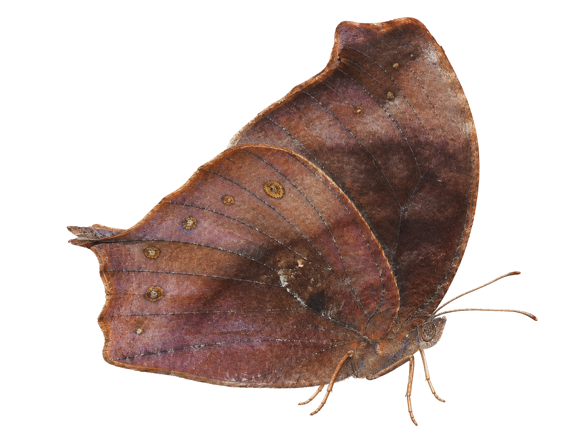

Nymphalidae · 142 / 165
Melanitis phedima
Melanitis phedima

বৈশিষ্ট্য ও শনাক্তকরণ
বড় গাঢ় বাদামি প্রজাপতি। ডানার কিনারা কোণাকৃতি; বন্ধ ডানার নিচের দিক শুকনো পাতার মতো।
স্ত্রী ও পুরুষের পার্থক্য
শরতের স্ত্রীর রূপে লালচে রঙ বেশি হতে পারে; তবে ঋতু ও ব্যক্তিভেদেও পরিবর্তন বড়।
আকার
সামনের এক ডানার দৈর্ঘ্য ৩২–৪৫ মিমি।
ওকিনাওয়ার দ্বীপে রেকর্ড
ইয়ে, ওকিনাওয়া, ইশিগাকি, ইরিওমোতে ও ইয়োনাগুনিতে রেকর্ড আছে।
আবাসস্থল
দিনে অন্ধকার বনে বিশ্রাম নেয়, সন্ধ্যায় বনপ্রান্ত ও বনপথে সক্রিয় হয়। গাছের রস ও ফলের কাছে আসে।
জীবনযাপন ও অতিরিক্ত তথ্য
হনশুতেও বিস্তৃত, কিন্তু ওকিনাওয়ায় দ্বীপভিত্তিক রেকর্ড দেখুন। Melanitis leda-এর সঙ্গে বিভ্রান্তি এড়ান।
শূককীট ও খাদ্য উদ্ভিদ
Phacelurus, Coix, Miscanthus ও Imperata-জাতীয় Poaceae উদ্ভিদ খাদ্য।
তথ্যসূত্র ও সহায়ক পাঠ
- ムシミル：ウスイロコノマチョウ
ডেটায় উল্লেখিত সূত্র দেখার তারিখ: 2026-11-10 - 沖縄蝶類生態図鑑：クロコノマチョウ
ডেটায় উল্লেখিত সূত্র দেখার তারিখ: 2026-11-10 - 昆虫エクスプローラ：クロコノマチョウ
ডেটায় উল্লেখিত সূত্র দেখার তারিখ: 2026-11-10
তথ্য সরবরাহকৃত ডেটার উপর ভিত্তি করে তৈরি (হালনাগাদ: ১০ নভেম্বর ২০২৬)। কোনো দ্বীপের রেকর্ড সেখানে বর্তমান স্থায়ী বসবাস বা সহজে দেখা পাওয়ার নিশ্চয়তা নয়। চিত্র নির্দেশক; শনাক্তকরণে বাস্তব নমুনা ও সূত্র মিলিয়ে দেখুন।